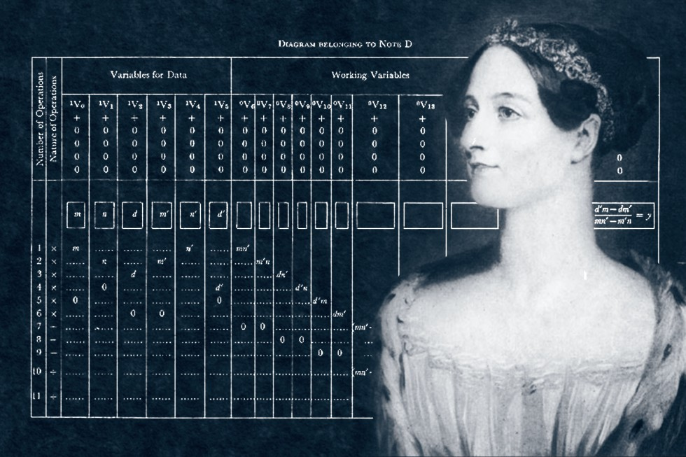
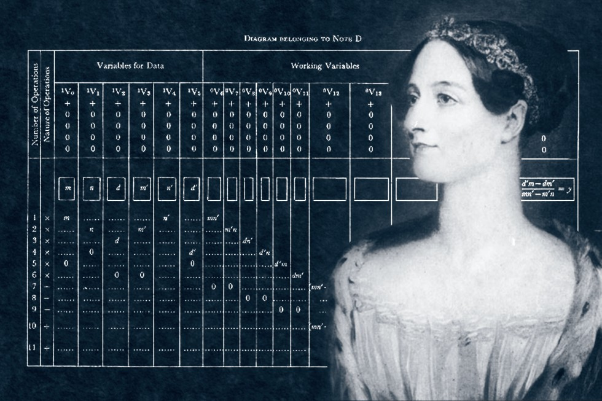

Ada Lovelace
Biografia
Ada Lovelace, nascida em 10 de dezembro de 1815, foi uma matemática e escritora britânica, conhecida por seu trabalho com o Máquina Analítica de Charles Babbage. Ela é considerada a primeira programadora da história.
Devido à importância histórica e científica da estudiosa, que previu até mesmo as bases da inteligência artificial, a segunda terça-feira de outubro se tornou o Dia de Ada Lovelace. A data criada em 2009 homenageia as contribuições das mulheres para ciência, tecnologia, engenharia e matemática.
Como Ada Lovelace se interessou por computadores
Durante sua infância, Augusta Ada Byron foi uma criança muito curiosa e sua mãe se dedicou para que ela aprendesse matemática, pois não queria que a jovem seguisse a vida de poeta do pai. A informação está em um documento publicado pelo No More Matildas, movimento criado pela Associação de Mulheres Pesquisadoras e Tecnólogas (Amit), surgida em 2001, na Europa.
Contribuições para a Tecnologia
A contribuição mais notável de Ada Lovelace foi seu trabalho no algoritmo para a Máquina Analítica, tornando-se a primeira pessoa a perceber que essa máquina poderia ser usada para além de cálculos matemáticos, incluindo a criação de sequências e loops, características fundamentais da programação moderna.
 


Veja o video Abaixo:
Legado
O legado de Ada Lovelace vive até hoje, com o "Dia de Ada Lovelace" celebrado em 13 de outubro em sua homenagem. Sua visão e compreensão da máquina analítica pavimentaram o caminho para o desenvolvimento da programação de computadores.
Citações Inspiradoras
"A máquina pode fazer qualquer coisa que saiba como ordenar; não há diferença entre a execução de cálculos ou composturas musicais ou outras operações que seguem processos definidos." - Ada Lovelace